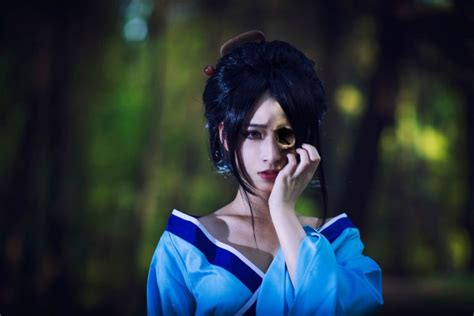

The Hone-onna (骨女, Hone-onna), as her name says is nothing more than a skeleton who tricks men by portraying herself as an attractive woman. She lures her victim to a spot of her choosing and starts seducing them. After that, she starts sucking their life force dry to the point where there is nothing but a pile of dust.
Not all who die turn into vengeful beings of grudge and jealousy. Hone onna retain an undying love that persists long after their flesh has rotted away, allowing them to continue to be with the object of their affection despite having died. These ghosts appear as they did in life – young, beautiful women in their prime. Only those unclouded by love or with strong religious faith are able to see through their disguise to their true form: rotting, fetid skeletal corpses returned from the grave.
At night, a hone onna arises from the grave and wanders to the house of her former lover. Her appearance is a great shock to those who had believed her to be dead. This shock quickly turns into such joy that it blinds them to any clues that something might be wrong. Even the hone onna herself does not know of her condition, as she is driven only by love; she exists as a ghost only to continue the love she had in life. She spends the night and leaves in the morning, and this unholy coupling can continue for days or even weeks without being noticed. Each night she drains some of her lover’s life force, and he grows ever sicker and weaker. Without intervention, he will eventually die, joining his lover forever in death’s embrace.
Though her human lover may be repulsed by her when the truth is revealed to him, the ghost never realizes her condition and continues to visit every night. A home can be warded with prayers and magic charms against entry by ghosts, but they only work as long as the master of the house wills them to. As her body decays further, her enchanting allure only increases, and eventually most men succumb and let her into their homes one last time, sacrificing their own lives to the ghost of the woman they loved. The hone-onna appears first time in a yōkai encyclopedia called Konjaku Gazu Zoku Hyakki, written in 1779 by Toriyama Sekien. The story in which the bone woman is mentioned is named Botan Dōrō (牡丹燈籠; "The Peony Lantern"). It tells about a beautiful, but very skinny lady carrying a red lantern in shape of a peony flower and visiting men in attempt to sleep with them. Botan Dōrō itself is derived from a Buddhist Chinese tale collection named Otogibōko (御伽ばうこ), written by Asai Ryōi in 1666. The collection was composed as some kind of moral-free version of the Chinese work Jiandeng Xinhua written in 1378 by Qu You. Botan Dōrō tells about a young man named Ogiwara Shinnojō, who is wandering around at night and who meets a young woman named O-Tsuyu. She carries a red peony lantern and Shinnojō immediately falls in love with her. Every evening now they meet each other for love and to sleep together. The overly curious neighbour sneaks secretly to the bedroom of the couple to observe them. When the light of the bedroom falls onto the couple the neighbour nearly dies in shock, when he recognizes that the sleeping Shinnojō shares his bed with a moving skeleton. An orally traditioned legend from Akita prefecture tells the story of a young man who became lost during a heavy snow storm. Suddenly he saw a young woman, carrying a red peony lantern. The woman waved at him and guided the man to her house. When the man wanted to thank her for help, the light of the house and the lantern fell onto her face and the shocked man recognized her face as a blank skeleton skull.